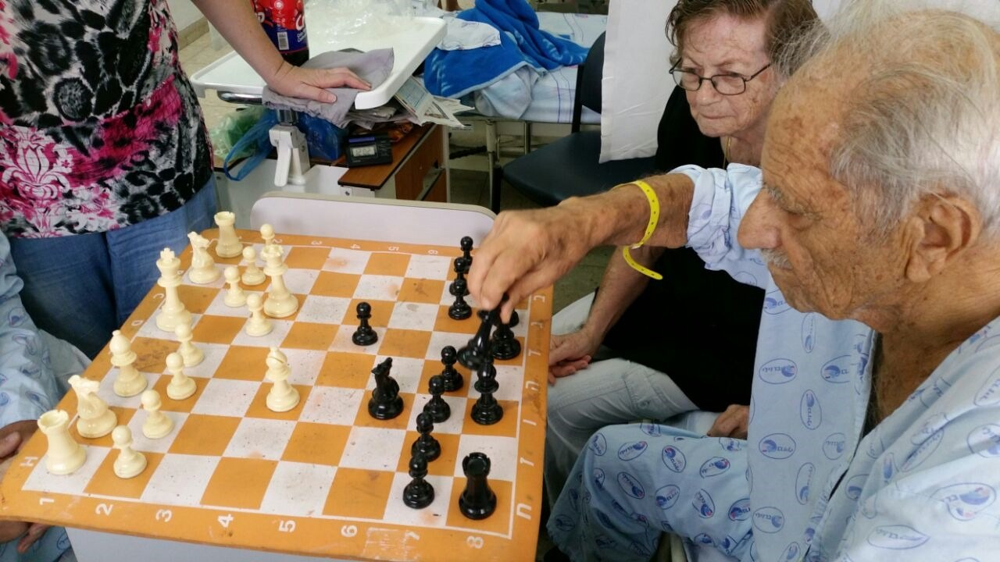

הסיפור שלהם
זוגיות שהייתה בית.
סוניה ואמיר בנו יחד חיים שמרכזם אהבה, משפחה, ערכים ועשייה. בבית שלהם היו חום, אוכל, שירים, סיפורים, הומור ודלת פתוחה לאנשים שאהבו.
קריאת דברי הפרידה ←לזכרם האהוב
סיפור של זוגיות, משפחה ונתינה
שתי נשמות, דרך אחת. סיפור אהבה שהחל הרבה לפני שנכתבו המילים, וממשיך לחיות בכל מי שזכה להכיר אותם.
שיתוף זיכרון

הסיפור שלהם
סוניה ואמיר בנו יחד חיים שמרכזם אהבה, משפחה, ערכים ועשייה. בבית שלהם היו חום, אוכל, שירים, סיפורים, הומור ודלת פתוחה לאנשים שאהבו.
קריאת דברי הפרידה ←״ מי שהכיר אותם ידע: זו הייתה זוגיות נדירה, תומכת ומיוחדת — כזו שנשארת בלב גם אחרי הפרידה.





תחנות וזיכרונות
חברות שהפכה לשותפות חיים.
בית של חום, אירוח ואהבה.
זיכרונות שעברו מדור לדור.
ילדים ונכדים שהיו מקור גאווה.
עשייה ונתינה לאורך שנים.
אהבה שממשיכה להאיר.
מתוך דברי המשפחה
״סוניה הייתה מסורה לכל הסובבים אותה, ודאגה לבית חם, עוטף ומלא אהבה.״— המשפחה
״אמיר היה איש של עשייה, ערכים, שירים וסיפורים.״— המשפחה
״הזיכרון שלהם ממשיך לחיות ברגעים הקטנים ובאנשים שאהבו אותם.״— לזכרם